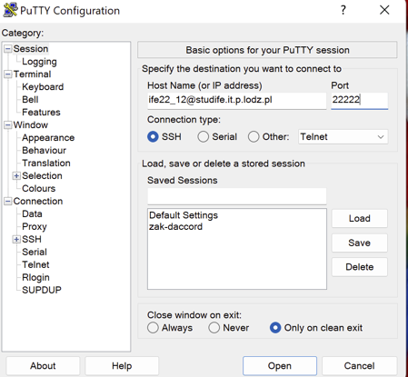
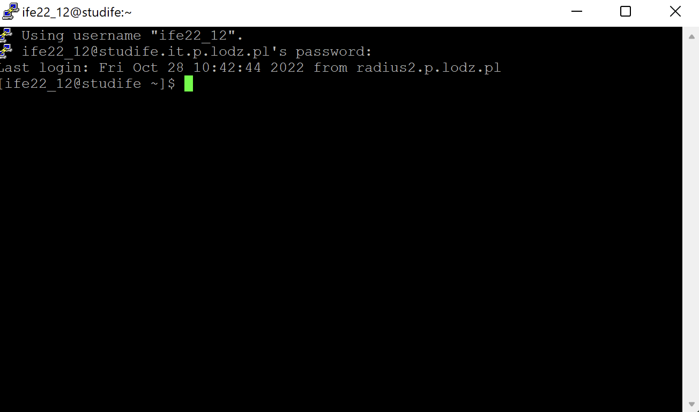
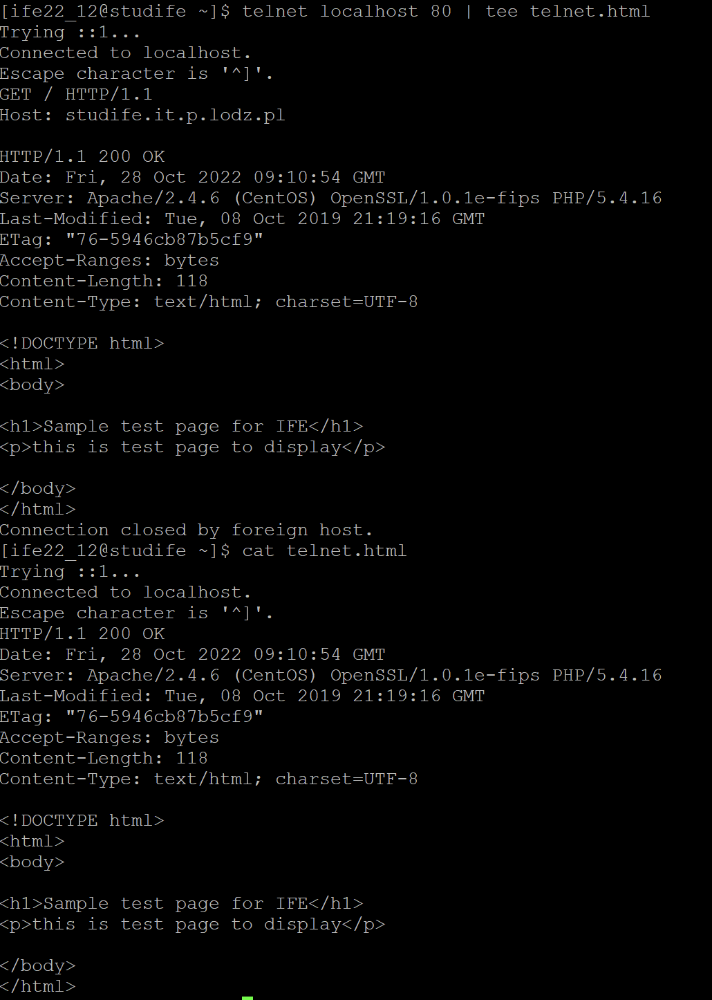
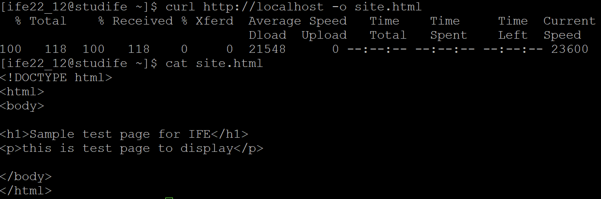
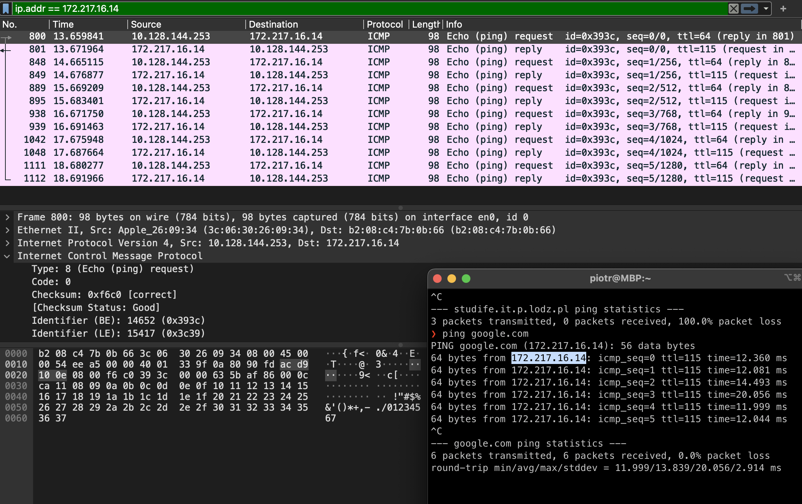
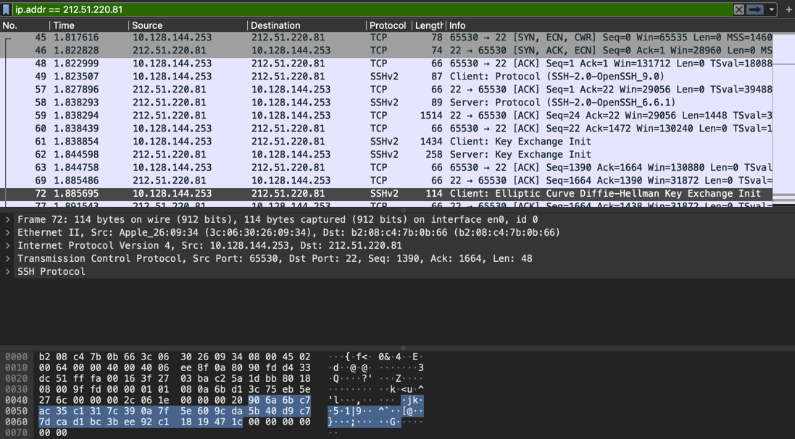
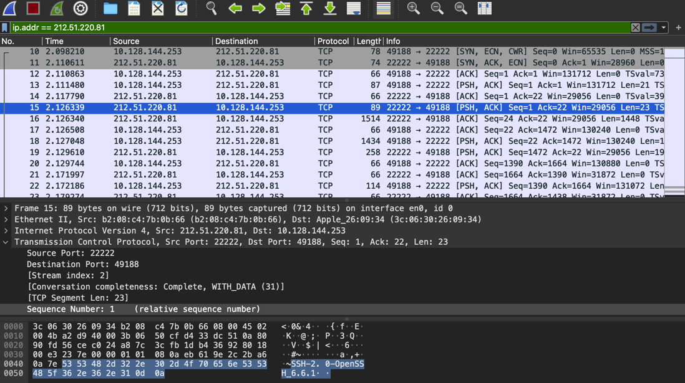
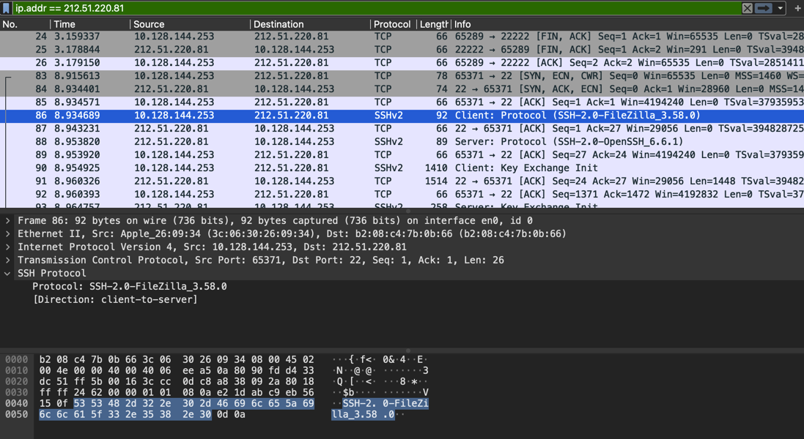
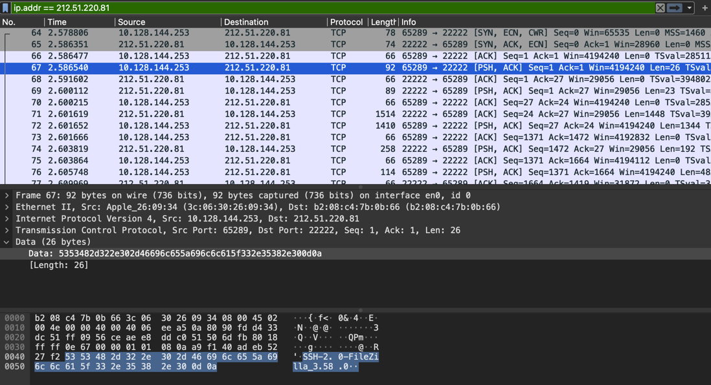

ISO/OSI model describes how applications communicate over the network.
There are seven layers of ISO/OSI model:
| Layer | Examples of protocols |
|---|---|
| Application |
|
| Presentation |
|
| Session |
|
| Transport |
|
| Network |
|
| Link |
|
| Physical |
|
| Layer | Unit |
|---|---|
| Application | Message |
| Presentation | Message |
| Session | Message |
| Transport | Segment |
| Network | Datagram |
| Link | Frame |
| Physical | Bits |
| Layer | Protocols |
|---|---|
| Application |
|
| Presentation |
|
| Session |
|
| Transport |
|
| Network |
|
| Link |
|
| Physical |
|
Sources:
Using PuTTY, we connect to the studife.it.p.lodz.pl server using SSH protocol on port 22222. As per SSH specification, we may specify the login within the URL.
Once we click "Open" button, we are greeted with the SSH login banner and after we input the password, we may log in
Threre are multiple ways this may be achieved. One way is to use telnet command. Telnet is a protocol that was once used to remotely control the server. It's ability to send ASCII commands can be used to send a GET request and using "tee" command, pipe the output both to the terminal and to a file. Throughout the exercise, we utilised the "localhost" as we were unable to make a request to "studife.it.p.lodz.pl" when making a request directly from the server.
However, as it may be noticed, such way of operation is far from being ideal. Not only is telnet outdated, but also we would have to manually clean the file from the unwanted telnet commands.
A superior solution is to use "curl" or "wget" commands. Curl is a command line tools used to manually send HTTP requests. Wget is a tool used specifically to download web pages and other assets. In this example, we used curl command to download the sample page.
A simple solution is to use SCP command to copy the file securely to the local folder. The proof is provided as a part of the next exercise.
As the "studife.it.p.lodz.pl" server is configured in a secure manner, it does not respond to ping requests. Having consulted with the tutor, we sent ping requests to a different server.
We may notice that each ping consists of several layers, as all packets do.
ICMP is a protocol that supports Internet Protocol, thus it works on the Internet layer
We could also consider that in the very beginning a DNS query (Appliation layer) is sent to determine the IP address of the chosen server (google.com in our case).
Next, ARP request (Data-link layer) is sent to determine the MAC address of the next device.
We may notice that each packet within FTP connection consists of several layers, as all packets do.
Since FTP does not encrypt the data that is sent, we may easily find the password within the packets, as shown on the image above.
Both SCP and SFTP protocols utilise SSH to encrypt the data that is exchanged between the client and the server. As a result, we are unable to extract password from the communication. Interestingly, Wireshark tries to interpret the communication and, e.g. while connecting to port 22, it interprets the communication as SSH protocol.
SCP Protocol
Port 22
Port 22222
SFTP Protocol
Port 22
Port 22222
Both protocols make use of the same underlying layers. SFTP is FTP wrapped inside SSH and SCP is a secure copy method based on SSH: